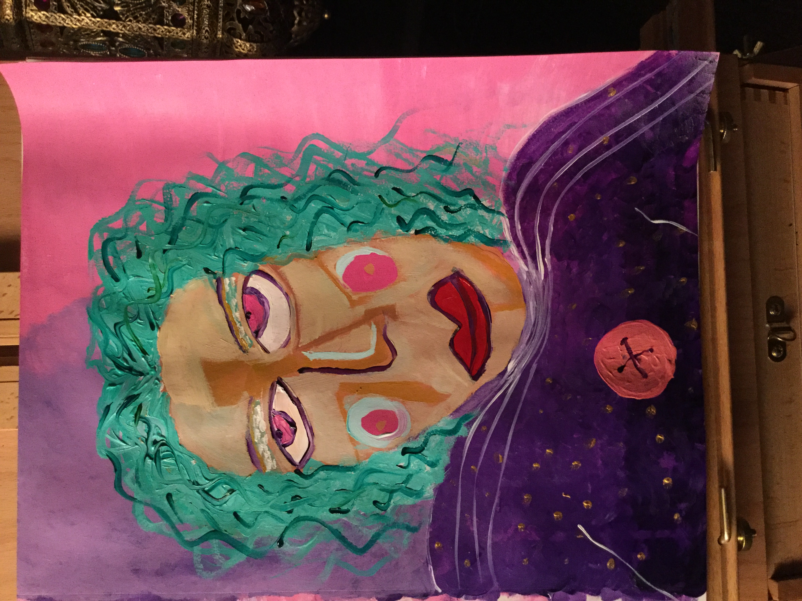

Profile - Tabi Bean
About Me
|
Interests
About Me
I was born in Ponca City, Oklahoma.
I now live just outside of Houston, Texas.
I am a social media and website manager.
I hope to change careers and become a back end developer.
Interests
I like to teach kids how to play
stringed
instruments. My favorite is the violin.
I like to make
weird
art. 
I like to LARP. My favorite LARP is
Soverign Scrolls.
I love all types of music.
Your browser does not support the audio element.Here is a
link to the audio
instead.